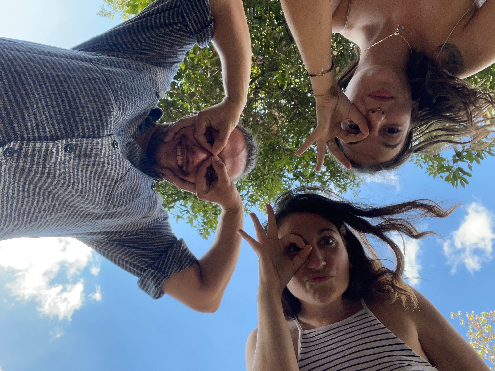

<style>
  /* Styles pour les écrans de petite taille (téléphones) */
  @media screen and (max-width: 768px) {
    /* Réduire la largeur de l'image à 30% et centrer */
    .centered-image {
      width: 100%;
      display: block;
      margin: 0 auto;
    }
  }
</style>

<section class="page-section">
  <div class="container">
    <div class="row">
      <div class="col-lg-12 text-center">
        <h2 class="section-heading text-uppercase">404 - Page perdue</h2>
        <h3 class="section-subheading text-muted"><p>Je sais pas ce que t'as fait, mais tu t'es perdu !</p>
        <p><a href="/">Retour à l'accueil</a></p></h3>
        
      </div>
    </div>
  </div>
</section>
